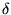

|
You are here : Control
System Design - Index | Book Contents |
Chapter 13
13. Digital Control
Preview
Models for discrete time systems have been described in Chapter 1.
There we saw that digital and continuous systems were actually quite
close. Hence it is often true that digital responses approach the
corresponding continuous response as the sampling period goes to zero.
For this reason, in the remainder of the book we will present continuous
and discrete ideas in parallel. The purpose of the current chapter is to
provide a smooth transition to this latter work by highlighting the
special issues associated with digital control. In particular, the
chapter covers:
- why one cannot simply treat digital control as if it were exactly
the same as continuous control, and
- how to carry out designs for digital control systems so that the at-sample
response is exactly treated.
Summary
- There are a number of ways of designing digital control systems:
- design in continuous time and discretize the controller prior
to implementation;
- model the process by a digital model and carry out the design
in discrete time;
- Continuous time design which is discretized for implementation;
- Continuous time signals and models are utilized for the
design.
- Prior to implementation, the controller is replaced by an
equivalent discrete time version.
- Equivalent means that simply maps s to 
(where
is the delta operator).
- Caution must be exercised since the analysis was carried out
in continuous time and the expected results are therefore based
on the assumption that the sampling rate is high enough to mask
sampling effects.
- If the sampling period is chosen carefully, in particular with
respect to the open and closed loop dynamics, then the results
should be acceptable.
- Discrete design based on a discretized process model:
- First the model of the continuous process is discretized.
- Then, based on the discrete process, a discrete controller is
designed and implemented.
- Caution must be exercised with so called intersample behavior:
the analysis is based entirely on the behavior as observed at
discrete points in time, but the process has a continuous
behavior also between sampling instances.
- Problems can be avoided by refraining from designing solutions
which appear feasible in a discrete time analysis, but are known
to be unachievable in a continuous time analysis (such as
removing non-minimum phase zeros from the closed loop!).
- The following rules of thumb will help avoid intersample problems
if a purely digital design is carried out:
- Sample 10 times the desired closed loop bandwidth.
- Use simple anti-aliasing filters to avoid excessive phase
shift.
- Never try to cancel or otherwise compensate for discrete
sampling zeros.
- Always check the intersample response.
|